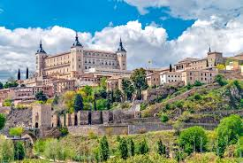

Серед найпопулярніших туристичних напрямків виділяються такі країни:
| Країна | Офіційний сайт туризму | Опис |
|---|---|---|
|
Франція | Франція – одна з найпопулярніших туристичних країн. |
|
Італія | Італія приваблює туристів своєю історією та культурою. |
|  | Іспанія | Іспанія відома своїми пляжами, культурою та гастрономією. |